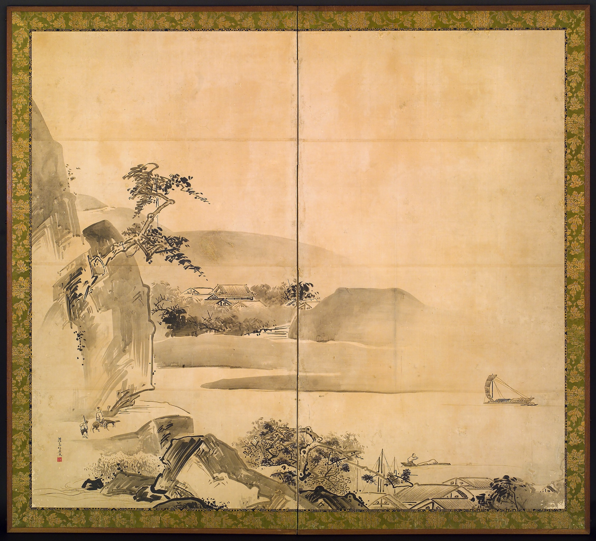
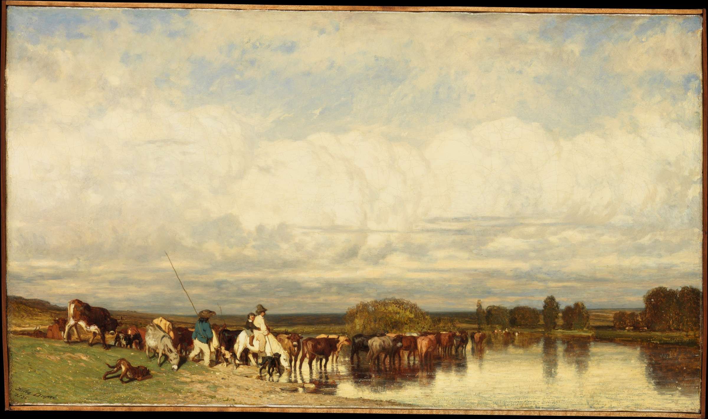
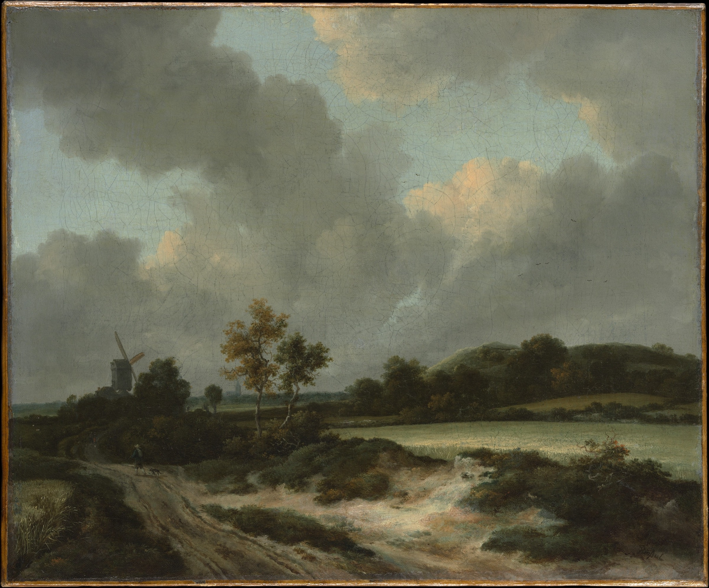
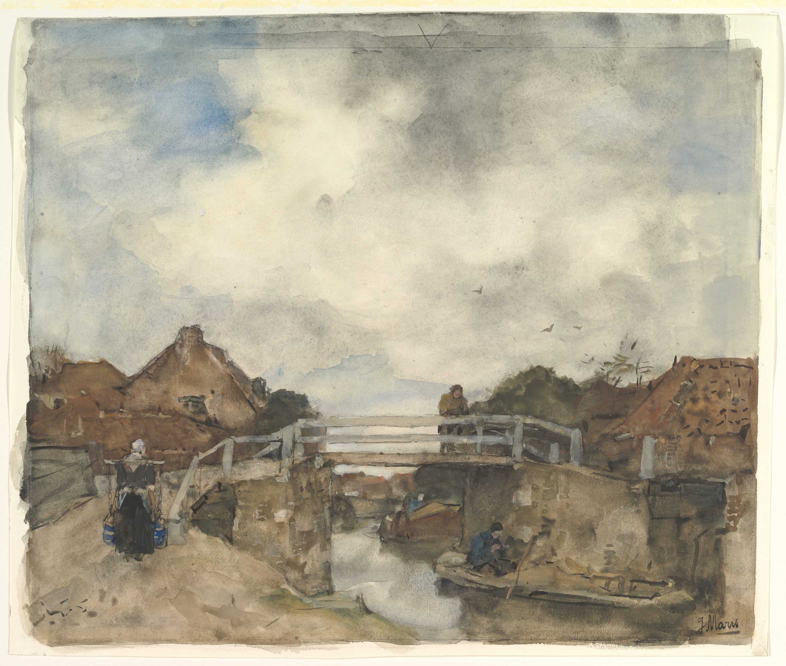

큰샘교회
교회소개
예배안내
새가족
성경 아카데미
온라인 주보
칼럼
도판 01 · 피터르 브뤼헐, 『추수하는 사람들』, 1565
No. 01
이번 주일 · 9월 27일
광야에서도 신실하신 하나님
민수기 14장 8-9절
설교 영상 보기
지난 설교
주일예배
오전 11시
성경공부
주일 오후 1시
아침예배
오전 7시
오시는 길
경기도 광명시 기아로 23, 4층 (소하동)
도판 목록

02
· 와타나베 시코(渡辺始興), 『산수』, 18세기 전반

03
· 쥘 뒤프레, 『여울을 건너는 소 떼』, 1836

04
· 야코프 판 라위스달, 『밀밭』

05
· 야코프 마리스(Jacob Maris), 『레이스베이크의 네덜란드 운하』, 19세기 후반